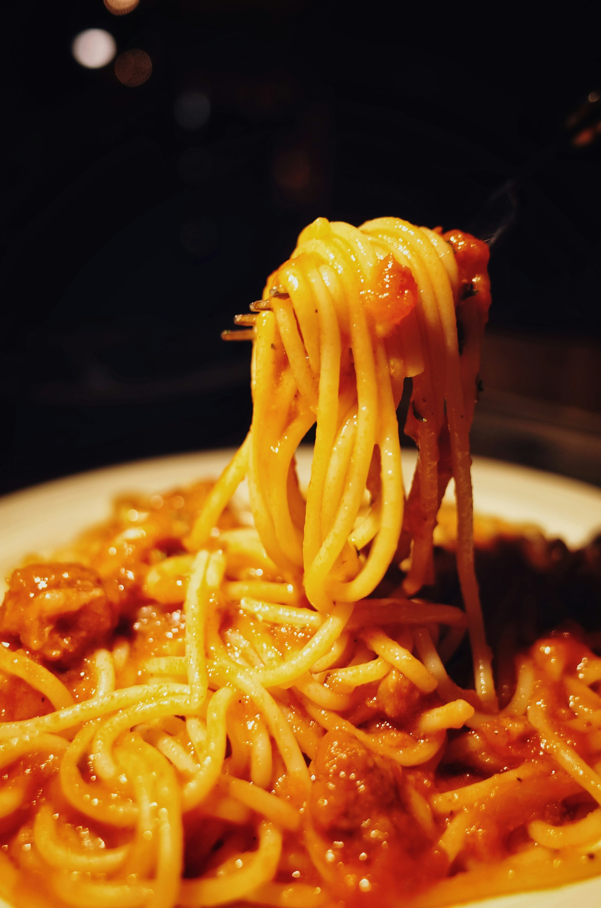

Linsen-Bolognese

Beschreibung
Linsen-Bolognese mit Tomaten und Basilikum
Zutaten
- 60g Tomatenmark
- 360g Linguine
- 1 Zwiebel
- 10g Basilikum
- 300g braune Linsen
- 400g Tomaten
- 4 Karotten
- Salz & Pfeffer
- 2 EL Balsamico
- Olivenöl
- 4 TL italienische Kräuter
- 4 Zehen Knoblauch
- 1l Gemüsebrühe
Schritte
- Zwiebel klein schneiden
- Knoblauch pressen
- Karotten schälen und klein schneiden
- Öl in einem Topf erhitzen und Zwiebeln und Karotten hinzufügen
- Nach 5 min Knoblauch hinzugeben, mit Salz, Pfeffer und Kräutern würzen
- Nach 3 min Linsen, Gemüsebrühe und Tomatenmark hinzugeben und aufkochen
- Tomaten halbieren
- Basilikum waschen und Blätter abzupfen
- Pasta zubereiten
- Tomaten und Balsamico in den Topf geben, weitere 10-15 min köcheln lassen
- Fertige Pasta zu der Linsen-Bolognese geben
- MIt Basilikum garnieren und servieren
Home